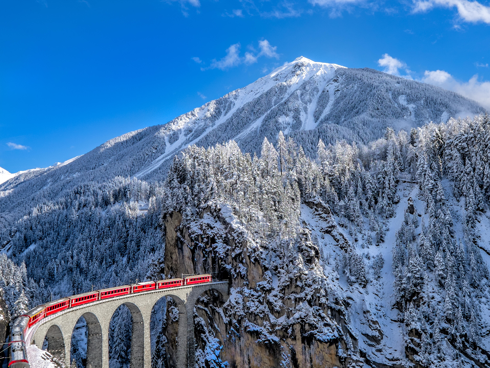
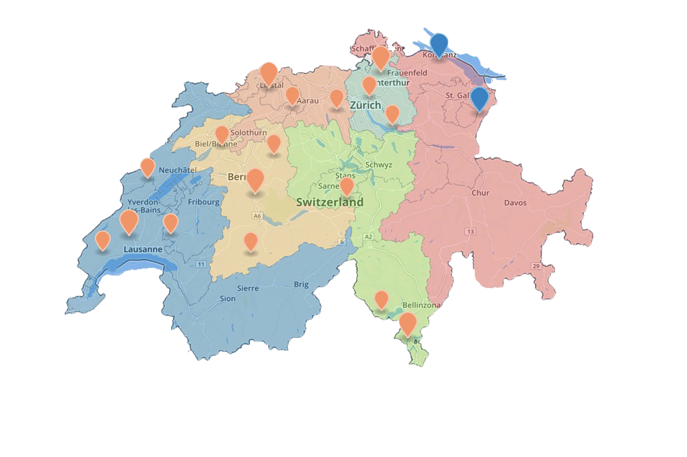

Turismo na Suiça
Quando o assunto é o turismo na Suíça, você já pensa em chocolate, fondue e esportes na neve? Bom, esse pensamento está certo e errado. Isso porque, embora esses três itens sejam bem característicos no país, famosos mundialmente e um grande atrativo para viajantes de todo o canto do mundo, a Suíça é muito mais. A Suíça, na Europa, é daqueles países que podem ser visitados o ano inteiro e, a cada estação, você descobre uma paisagem e atrativos bem diferentes. Por isso, escolher depende do seu gosto pessoal por frio ou calor, ou mesmo por uma data comemorativa. Charmosa por natureza – são muitos lagos e montanhas nevadas nos Alpes Suíços que deixam a paisagem maravilhosa -, a Suíça possui uma atmosfera romântica, uma bela arquitetura medieval, e muita história para contar. Outro aspecto fascinante do país, é que ele é dividido por regiões com forte influência recebida dos países vizinhos, como Alemanha, Itália e França. Para onde viajar na Suíça?
DICAS PARA BRASILEIROS
Independente da época do ano, a Suíça surpreende. Mas é bom saber que os roteiros e os planejamentos mudam muito com cada estação. Nas estações mais quentes, as viagens podem incluir muitos lagos, rios e trilhas de montanha. Em Berna, por exemplo, você pode descer com a correnteza pelo rio Aare – quase como um rio lento natural. Você pode nadar, andar de caiaque ou fazer SUP nos lagos de Lucerna, Zurich, Interlaken. Pode aproveitar os vales de Ticino e ainda curtir as trilhas incríveis de Appenzell e os vinhedos da Riviera Montreux. Minhas dicas de Roteiros de Verão na Suíça estão detalhadas nesse link.

Assista sobre
Ao clicar no botão abaixo vc será redirecionado para um vídeo relaxante que tem como objetivo apresentar as paisagens da Suiça:
Passeios de TREM
Praticamente todos os recantos da Suíça podem ser visitados de trem. O país possui cerca de 5.000 quilômetros de linhas de transporte ferroviário,
sendo mais de mil deles em trajetos íngremes pelos Alpes e demais formações montanhosas. Esta é, sem dúvidas, uma nação que merece ser visitada e,
de preferência, por suas vias ferroviárias.
Uma ótima maneira de chegar a St. Moritz é por meio do lendário Glacier Express. Conhecido como o “trem expresso mais lento do mundo”
(e, sem dúvida, uma das rotas cênicas mais belas), ele conecta Zermatt e outras cidades ao redor da montanha Matterhorn a St. Moritz, do outro lado do país.
A viagem completa a bordo do Glacier Express dura cerca de 7h30. Mas se você estiver com tempo limitado, considere viajar apenas algumas seções,
como St. Moritz-Brig, St. Moritz-Andermatt, Chur-Brig e assim por diante. Confira todos os horários, rotas e valores no site oficial do Glacier Express.
Se você tem vontade de fazer um passeio pelos Alpes suíços, o Bernina Express é uma das melhores opções ferroviárias.
Ligando Chur, na Suíça, à cidade fronteiriça de Tirano, na Itália, o trem oferece vistas deslumbrantes a partir de seus famosos vagões vermelhos panorâmicos.
Você pode fazer a rota completa ou, então, embarcar na estância de St. Moritz, descer em Tirano e esticar a viagem até Milão.
As duas linhas principais do Bernina Express – a linha Bernina e a linha Albula – foram declaradas Patrimônio da Humanidade em 2008.
A linha Bernina é uma clássica viagem de trem com duração de 4h. Ela passa por 196 pontes, 55 túneis e também pelo fantástico Passo da Bernina, a 2.328 metros de altitude.
DICA: Uma excelente opção para quem quer conhecer a Suíça de trem é o chamado Swiss Travel Pass, um bilhete permite aos viajantes conhecer o país de ponta a ponta
usando toda a malha de transporte público (trens, barcos e ônibus) com viagens ilimitadas de acordo com a quantidade de dias escolhidos.
A modalidade também oferece descontos em acessos turísticos nas montanhas e permite entrar gratuitamente em alguns museus e outras atrações.


Alpes Suiços
Zermatt possui diversas pistas de esqui, sendo que uma delas com 25 quilômetros de extensão é considerada uma das maiores de toda a Europa.
Também fica lá a montanha mais conhecida do país, estampada nas embalagens do chocolate Toblerone: a Matterhorn.
De Zermatt também sai o Glacier Express, um trem panorâmico pelo alpes até a cidade de St. Moritz, que é um dos destinos de inverno mais procurados pelos viajantes.
Isso porque, St. Moritz tem uma das melhores infraestrutura do país para curtir o frio e a neve, tanto que já foi sede dos Jogos Olímpicos de Inverno.
Há muitos hotéis, lojas e estações de esqui, sendo o destino mais caro do país.
Um dos atrativos mais bacanas da cidade é o lago, que sempre congela no inverno e permite caminhar sobre as águas congeladas.
A cidade também é conhecida pelas águas termais e spa.
Já Interlaken fica entre dois lagos (Brienz e Thun) e possui teleféricos, bondinhos e pistas de esqui.
O passeio mais famoso de Interlaken é o Jungfraujoch, que tem como destino o chamado “topo da Europa”.
Nesse local, há um complexo turístico no qual há a possibilidade de praticar diversas atividades de inverno e conhecer um “palácio” de gelo.
A partir de Interlaken, é possível fazer um bate-volta em Grindelwald e Lauterbrunnen, duas belas cidadezinhas encravadas nas montanhas dos alpes.
Com uma altitude de mais de 1.500 metros, Davos é a cidade mais alta dos Alpes Suíços e um dos principais centros para a prática de esportes de inverno.
Com ótima estrutura, conta com quase 60 teleféricos, diversas pistas de esqui e também três pistas de trenó.

Descubra um pouco mais sobre o país
Abaixo estam apresentadas algumas informações sobre a Suiça e o turismo recorrente nela.
17.900.000 +
Total de turistas por ano8.700.000+
População local26
Estados/cantões$12,3 Bilhões
Gastos no setor do turismoAs informações apresentadas acima destacam dados do respectivo ano de 2022.
Matheus Victor
matheus.santos1749@etec.sp.gov.br
2023 Todos os Direitos Reservados. ETEC Vasco Antônio Venchiarutti